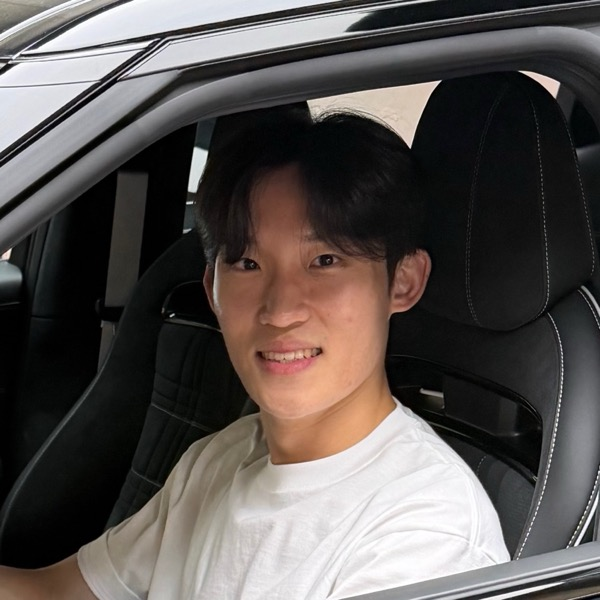
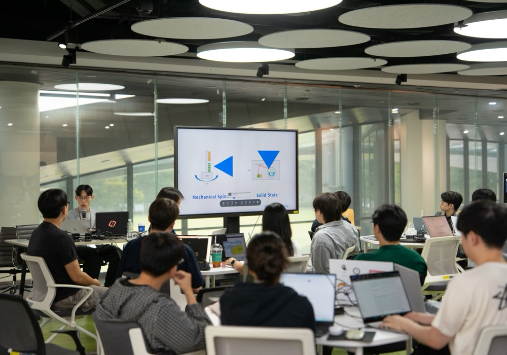

Donghwan Kim
I am an undergraduate student at Sungkyunkwan University. My research interests include autonomous driving systems, end-to-end (E2E) autonomous driving, and vehicle control. Currently, I'm working on token pruning for VLM-based end-to-end driving models, focusing on how to reduce computation without losing spatial information.
News
Education
Experience
Research Intern (URP) · Automotive Mechatronics Lab
Jun 2026 – Aug 2026Active Suspension Control System Development for Maximum Regenerative Energy
- Developed a 14-state full-car dynamics model and integrated CarMaker with MATLAB/Simulink for co-simulation validation.
- Designed LQR, LQI, and model-free active suspension controllers to redistribute rear-wheel loads and expand the regenerative braking envelope during cornering.
- Achieved an 11.6% increase in average deceleration and a 15.79% increase in regenerative energy recovery compared with passive suspension.
Research Intern (URP) · Automation Lab
Dec 2025 – Feb 2026Multi-Camera Visual Odometry (VO) Development for High-Accuracy Localization
- Developed a 360-degree perception module using a 4-camera setup based on the BASALT algorithm.
- Designed a dual-stereo pair configuration and integrated the outputs via Extended Kalman Filter (EKF) fusion to improve localization accuracy without loop closure.
- Authored and submitted a technical paper to the Korea Information Processing Society (KIPS) based on the research results.
Publications
Regenerative Braking Enhancement via Active-Suspension Load Redistribution
KSAE 2026 Annual Autumn ConferenceSubmitted
Regenerative Braking Enhancement for Rear-Wheel-Drive Electric Vehicles during Cornering Deceleration via Active-Suspension Load Redistribution
Active suspension redistributes diagonal wheel loads to widen the regenerative braking margin of a rear-wheel-drive EV during cornering. Validated in MATLAB/Simulink–CarMaker co-simulation: +16.04% recovered energy and +11.6% mean deceleration over passive suspension.
BASALT-Based Visual Odometry with Front–Rear Stereo Fisheye Views
ASK 2026Annual Spring Conference of KIPS
Evaluation of BASALT-Based Visual Odometry with Integrated Front–Rear Stereo Fisheye Views
360° visual odometry with front and rear stereo fisheye pairs on BASALT, fused by an EKF. Cut return-to-origin drift by 84.2% (to 0.812 m) versus the front-only baseline on a miniature EV.
Projects
F1TENTH (IFAC Roboracer 2026)
2026Led the SKKAI Mobility Team to build a 1/10-scale autonomous race car for our first IFAC Roboracer 2026 appearance, adapting the ForzaETH racing stack (ROS 2 Humble, Cartographer SLAM) to a custom platform with a SOSLAB GL-5 2D LiDAR and an NVIDIA Jetson Orin Nano. Migrated the perception and overtaking planner from Python to C++ to cut onboard CPU load, and improved head-to-head robustness with overtaking/evasion maneuvers validated in on-vehicle tests.
Silver Prize
LAT: LSTM Antenna Tracker
2026Led development of a directional antenna that predicts a drone's next position with an LSTM (GPS, RSSI, IMU, servo angles) and pre-aims a ROS 2–Teensy pan/tilt rig, removing the lag of position-based tracking. Validated in outdoor flight tests; Silver Prize at the SKKU Creative Capstone Design Competition (Jun 2026).
LiDAR-IMU SLAM for Racing Vehicle Localization
2025Integrated a FAST-LIO2 odometry pipeline into the SKKAI Physical AI Team's racing vehicle stack (Ouster OS0-64, Xsens MTi-7, NVIDIA Jetson AGX Orin, ROS Noetic), replacing network-dependent GPS localization with on-device SLAM to cut latency and improve robustness. Validated mapping in the CARLA simulator and in on-vehicle tests.
Teaching & Service

Instructor, SKKAI × SOSLAB LiDAR and Tech Startup Workshop
Sep 2026Led the workshop as SKKAI Mobility session head, hosting a talk by SOSLAB's CEO and running a hands-on ROS 2 + LiDAR obstacle-detection lab for 30+ SKKU students.

Mentor, 2026 Osan City–SKKU Pre-college AI·SW Camp
Aug 2026Taught middle and high school students the basics of autonomous driving with hands-on F1TENTH race car demos.